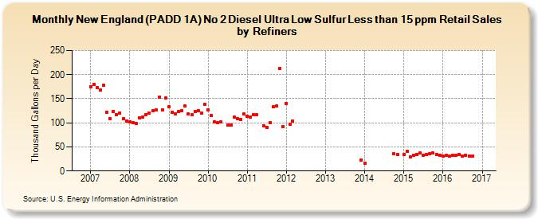

|
Download Data (XLS File) |
|
||||||||
|  | ||||||||
| New England (PADD 1A) No 2 Diesel Ultra Low Sulfur Less than 15 ppm Retail Sales by Refiners (Thousand Gallons per Day) | ||||||||
| Year | Jan | Feb | Mar | Apr | May | Jun | Jul | Aug | Sep | Oct | Nov | Dec |
|---|---|---|---|---|---|---|---|---|---|---|---|---|
| 2007 | 175.4 | 180.5 | 173.6 | 167.4 | 177.9 | 122.4 | 108.7 | 123.6 | 117.5 | 120.2 | 108.2 | 104.1 |
| 2008 | 101.8 | 99.9 | 98.1 | 110.5 | 112.5 | 117.6 | 120.5 | 125.7 | 126.9 | 153.7 | 127.3 | 151.6 |
| 2009 | 133.2 | 122.5 | 118.7 | 123.3 | 125.0 | 135.9 | 117.9 | 116.6 | 123.9 | 124.4 | 120.4 | 138.9 |
| 2010 | 127.1 | 115.2 | 102.8 | 99.7 | 101.9 | W | 95.6 | 95.2 | 111.5 | 108.4 | 107.2 | 117.8 |
| 2011 | 113.6 | 111.4 | 117.0 | 116.2 | W | 94.4 | 91.2 | 99.7 | 133.0 | 134.3 | 213.6 | 92.2 |
| 2012 | 139.7 | 97.6 | 103.6 | W | W | W | W | W | W | W | W | W |
| 2013 | W | W | W | W | W | W | W | W | W | NA | NA | 23.1 |
| 2014 | 16.3 | W | W | W | W | W | W | W | W | 35.1 | 34.0 | W |
| 2015 | 34.9 | 40.8 | 29.6 | 32.6 | 34.7 | 36.8 | 33.1 | 33.7 | 35.9 | 36.9 | 33.5 | 32.8 |
| 2016 | 31.1 | 32.5 | 30.4 | 31.9 | 32.1 | 34.1 | 31.1 | 32.4 | 31.7 | 31.5 | W | |
| - = No Data Reported; -- = Not Applicable; NA = Not Available; W = Withheld to avoid disclosure of individual company data. |
| Release Date: 2/1/2017 |
| Next Release Date: 3/1/2017 |